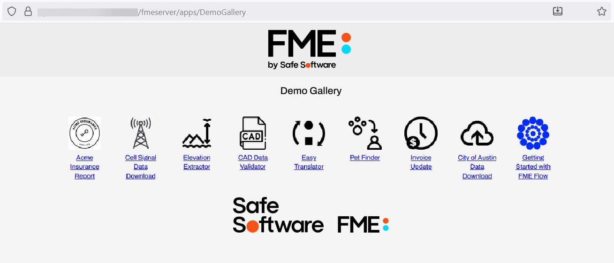
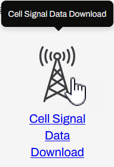
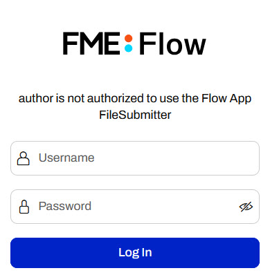
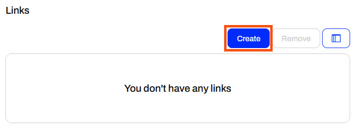
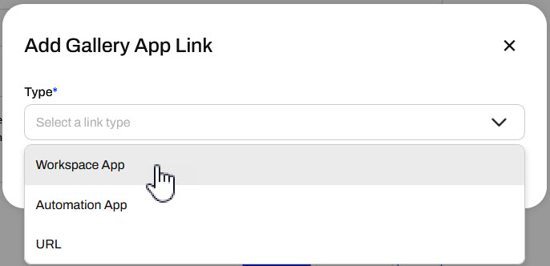
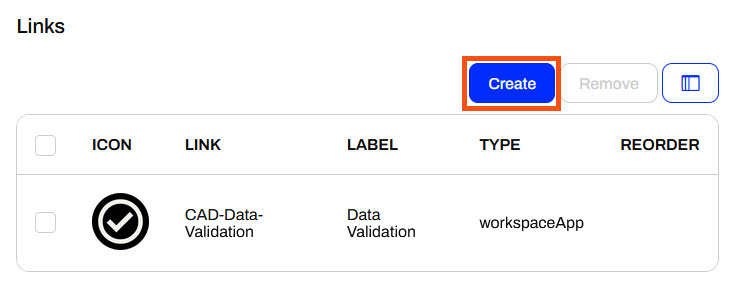
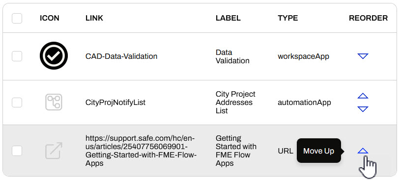
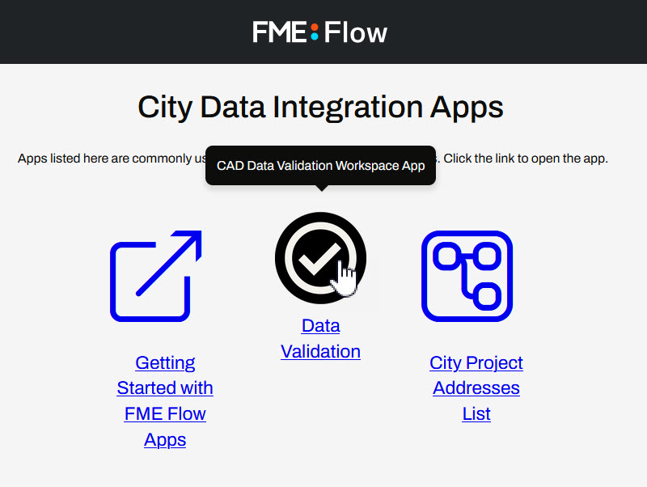

Learning Objectives
After completing this lesson, you'll be able to:
- Create an FME Flow Gallery App.
- Add Links and Workspace Apps to a Gallery App.
- Access and share a Gallery App.
Resources
The content used in this lesson builds on the previous lessons in this course. To do this exercise, please complete all the previous lessons.
If you're taking a live Safe Software-hosted training course or using an on-demand lab for this course, we've already imported the content for this lesson into your FME Flow.
If you're completing this lesson with your own FME Flow, you must import the starting project with the content into your FME Flow.
Expand for Steps to Import the Starting Project
2) Upload the
create_data_integration_apps.jceks encryption key to your FME Flow. This must be done by an fmesuperuser who has permission to System Configuration > Security > System Encryption. For more information, see our documentation on
System Encryption.
3) Navigate to your FME Flow and open Projects. Click Import.
5) The first step is Preview Content, where you may choose not to overwrite existing items. If all your items are New Items, you don't need to worry about overwriting existing items. Click Continue.
6) The next step is to select connections and tokens to import. This project doesn't contain any connections, parameters, tokens, or users to import. Click Continue through Step 2 and Step 3. Click Import Project on Step 4. The project will import and display its import status from the same page.
If the project import failed, check that you uploaded the encryption key and repeat the process. If the issue persists, please contact us at train@safe.com.
Gallery Apps
Gallery Apps act as landing pages to link to other apps and websites. You add links to Workspace Apps, Automation Apps, and external URLs that display with customizable text and icons on the Gallery App page. Like all other Flow Apps, you access Gallery Apps from a single URL. By linking to other apps and websites from the Gallery App, you can group and share content by sharing only one URL, which is the Gallery App itself.

Just like other Flow Apps, the Create Gallery App opens a form that you fill out to create your Gallery App. The customization options are the same as those of other Flow Apps, allowing you to tailor the app to match your organization's branding by adding color, icons, and images.


Links are unique to Gallery Apps and reference the individual links in your Gallery App displays. For each link, select "Create" and then choose your link type.


The window will automatically populate parameters for you to fill out. You will need to select your app or paste your URL, and then customize how the link appears on the Gallery App.

The Label appears beneath the image on the Gallery App, while the Tooltip text appears when you hover your mouse over the image. The image appears as an icon that you may select to open the link. If you do not add an image, FME Flow will display default images that reflect the Link Type.


Although there isn't a Link Type for it, it's actually possible to link to another Gallery App from a Gallery App. To do this, you just select the URL Link Type and set it to the Gallery App's custom URL.
App Permissions
Gallery Apps may be publicly accessible, provided that your FME Flow is publicly accessible. Alternatively, you can turn on Require Authentication to restrict your app access to specific FME Flow users and roles.

Gallery App security settings only apply to the Gallery App page itself. You control permission to access the linked Workspace and Automation Apps separately and individually from those app creation and editing pages. If you do not have permission to a Workspace or Automation App, you will still see the link on the Gallery App page, but you will encounter an error when you open the link and attempt to log in to access the app.

Exercise

Frank, an FME Flow administrator, is going to create a Gallery App that links to other Flow Apps his colleagues have developed. It will be easier to share all the apps internally with colleagues if they send only one link to the Gallery App instead of multiple links.
Follow along with Frank's steps as he creates a new Gallery App.
1) Create Gallery App
On FME Flow, Frank expands the Flow Apps menu on the side and selects Create Gallery App.

The Create Gallery App form opens. Frank gives his app a name, title, and description.

2) Add Link to Workspace App
In the Links section, Frank clicks Create.

Frank selects Workspace App for the link type.

Frank selects Jennifer's CAD Data Validation Workspace App. He sets "Data Validation" for the Label and "CAD Data Validation Workspace App" for the Tooltip that displays when the user hovers over the link. To replace the default icon, Frank uploads the create-a-gallery-app_icon.png (C:\FMEData\Resources\FlowApps\create-a-gallery-app_icon.png) to replace the default Workspace App icon that displays on the Gallery App.

Once he fills out all the parameters, Frank clicks Add Link.
3) Add Link to Automation App
Frank clicks Create in the Links section again.

Frank selects Sven's Automation App called CityProjNotifyList. The Automation App triggers an Automation to send an email containing addresses near upcoming city projects. He fills out the Label and Tooltip. He doesn't add an image this time, the app link will show the default icon instead.

Frank clicks Add Link.
4) Add Link to Website
From the Create Gallery App page, Frank clicks Create in the Links section to add another link to his Gallery App.
This time, Frank selects URL as the Type. Since some users may not be familiar with Flow Apps when they use them, Frank will provide introductory information on Flow Apps. He pastes the following link to a Flow Apps article in the URL parameter.
https://support.safe.com/hc/en-us/articles/25407756069901-Getting-Started-with-FME-Flow-Apps
He fills out the Label and Tooltip, then clicks Create Link.

5) Reorder Links
FME Flow displays the links in the order that Frank adds them to the app. They will also display in this order on the Gallery App page. Frank wants the Flow Apps article to be the first link for the users in his app. In the Reorder column, Frank clicks Move Up twice for the URL link so that it is first in the list.

6) Create and Open a Gallery App
Frank leaves "Require Authentication" turned off and clicks "Create" to finish creating his Gallery App. Frank can always return to edit his Gallery App later if he wishes to customize it.

FME Flow displays the app URL to Frank, where he can copy it to share with colleagues or click to open it in a new tab. He opens the app and tests his links to the other apps and website.


Frank has successfully created a Gallery App that acts as a landing page to link to other Flow Apps and websites. He can now share multiple apps and URLs with users by only sharing the link to the Gallery App.